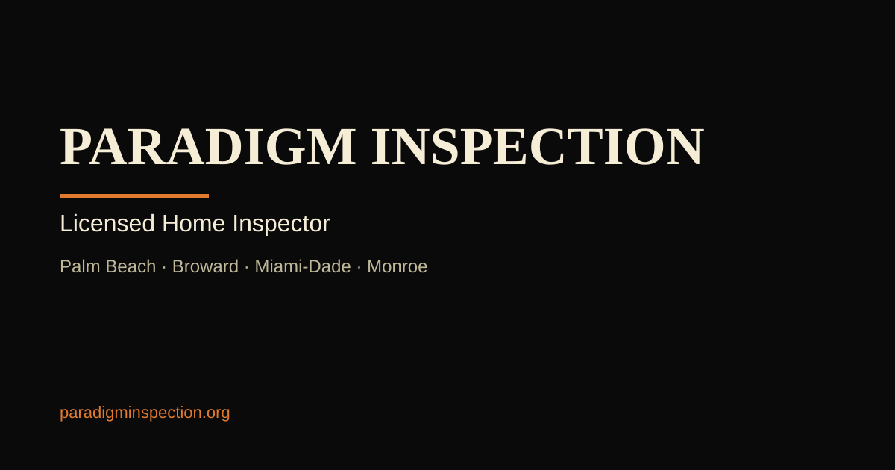

Export og-image.png — Owner Action Required
To complete the social sharing card setup, export the SVG below as a PNG file named og-image.png and place it in the same folder as index.html.
- Open this file in Google Chrome or Firefox (double-click it).
- Right-click on the image below and choose Save image as...
- Save it as og-image.png in the same folder as index.html.
- Alternatively, take a screenshot of the image at exactly 1200×630 pixels using your browser's DevTools (F12 → device toolbar → set 1200×630 → screenshot).
- After saving og-image.png, you may delete this file (og-image-export.html).
